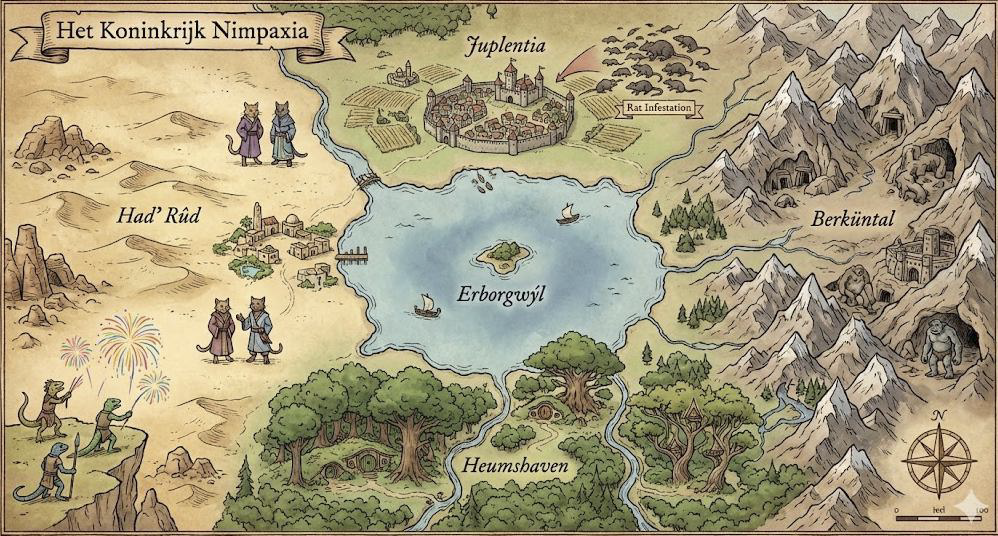
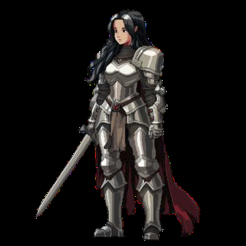
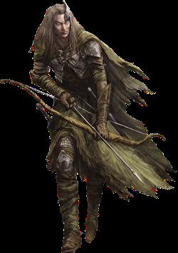
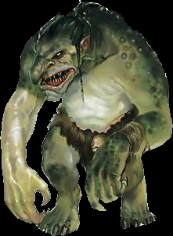
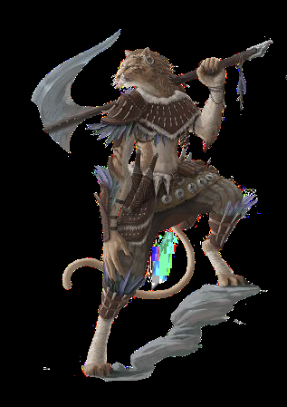

Het verhaal van het Koninkrijk Nimpaxia

Lang geleden leefde in het verre oosten een krijgsvrouw, Nimpa, die streed om het verkrijgen van zo veel mogelijk macht. Landen veroveren en dorpen plunderen was voor haar dagelijkse kost. Tot er op een dag iets gebeurde waar ze later nooit meer over wilde spreken. Wat hier precies gebeurde, is altijd een mysterie gebleven. Maar wat wel duidelijk was, is dat de vechter Nimpa na deze gebeurtenis klaar was met al het bloedvergieten. Ze ging op zoek naar gelijkgestemde volgelingen (later ook wel “nimps” genoemd), en vertrok met een bont gezelschap naar het westen. Daar zou ze een land stichten waar alle volkeren samen in eeuwige vrede met elkaar konden leven. Dit doopte ze uiteindelijk het “Koninkrijk Nimpaxia”, waar ze koningin van werd.
Nadat Nimpaxia werd gesticht, mochten de meegereisde volkeren kiezen waar zij zich wilden vestigen. Sommigen, zoals de oude mensen en hoge elven, stichten samen de grote stad van Juplentia. Andere schepsels hadden moeder aarde lief en trokken naar het bosrijke Heumshaven. Er waren ook zij die het niet zo op hadden met bomen en beschaving. Zij trokken de verre, ruige bergen van Berküntal in. De volkeren die ook deze bergen niet zagen zitten, hadden geen andere keus dan hun tentje op te zetten in de dorre woestenij van Had’ Rûd.
Het leek even goed te gaan, maar langzaam ontstond er spanning tussen de vier regionen. Koningin Nimpa zag dit gebeuren, en deed er alles aan om de rust te bewaren. Toen ze uiteindelijk heel ziek werd, en haar einde voelde naderen, besloot ze dat de situatie waarin Nimpaxia zich verkeerde niet langer toekomstbestendig was. Daarom beval ze dat elk van de vier regionen hun belangrijkste inwoners als afgezanten naar het meer Erborgwýl zou sturen. Hier zal een culturele uitwisseling plaatsvinden met bier, muziek en bovenal vriendschappelijke spellen tussen de nimps uit de vier gebieden. En het belangrijkste besluit: de regio die winnaar werd van de culturele uitwisseling mocht de volgende koning(in) van Nimpaxia leveren. Nadat alles was geregeld, overleed koningin Nimpa. Ze had gedaan wat ze kon voor de toekomst van haar rijk. Zal haar laatste wens in vervulling gaan? Of zal ook Nimpaxia ten onder gaan aan de eeuwige volkerentwist?
De regionen van Nimpaxia

Juplentia
In het noorden van Nimpaxia ligt de grote stad van Juplentia. De nederzetting is in korte tijd uitgegroeid tot de meest dichtbevolkte en belangrijkste plek van het koninkrijk. Verder staat de stad bekend om haar wilde nachtleven met Juplentiërs die beestachtig tekeer gaan. De inwoners van Juplentia laten geen enkel moment onbenut om te benoemen hoe fantastisch en hip ze wel niet zijn. En dat terwijl Juplentia stiekem geteisterd wordt door een rattenplaag. De beruchte, zelfingenomen houding van de Juplentiërs heeft geleid tot onbegrip bij de rest van Nimpaxia. Omgekeerd doen de stedelingen alsof de “nimps uit de regio” nog vastzitten in het jaar 7210. Als dat maar goed gaat tijdens de culturele uitwisseling.
Rassen: mensenrassen, hoge elven, weerwolven, vampiers en rattenvolk.

Heumshaven
Het groene Heumshaven is een waar oord voor liefhebbers van de natuur. Elke bosbewoner interpreteert dit op zijn of haar eigen manier. Zo heb je de boselfen en centauren, die het bos beschermen tegen relschoppers uit Had ‘Rûd. De hobbits en satyrs zijn vooral fan van de lokale, geestverruimende planten. Sommige tovenaars die zich in het bos hebben gevestigd staan erom bekend verboden middelen te produceren en te verpatsen aan Juplentiërs. Het restafval van hun experimenten belandt vervolgens in de beekjes. “Zo is natoer”, aldus de beruchte tovenaar Walter “De Witte”. Het moge duidelijk zijn dat niet elke bewoner van Heumshaven een vriendelijke boomknuffelaar is.
Rassen: boselfen, satyrs, feeën, centauren, hobbits en tovenaars.

Berküntal
Het berggebied Berküntal is een ruw en wild gebied waar het recht van de sterkste geldt. De bergbewoners leven graag eenvoudig. Ze brengen hun dagen door met slapen, eten en vechten. De dwergen wonen in hun ondergrondse nederzetting Basík-Feyt. Daar bereiden ze zich voor op een mogelijke burenruzie met de aardmannen. Boven op de bergen wonen de trollen die “per ongeluk” levensgevaarlijke lawines veroorzaken. Met andere regionen hebben Berküntalers maar weinig. “Bomen stom, stad ook stom. Zand grof en ruw en stom en gaat overal tussen zitten”, zo luidt een veelzeggende quote van de minotaurus “Bad Taur” Harry.
Rassen: dwergen, aardmannen, trollen, reuzen en minotauren.

Had’ Rûd
In de woestenij van Had’ Rûd groeit weinig. Daarom hebben de woestijnbewoners geleerd sluw en vernuftig te zijn om rond te komen. Zo woont er een kattenstam die graag naar Heumshaven trekt om daar op jacht te gaan naar voedsel of om kattenkruit te stelen. Ook heb je er de draakachtigen, ware pyromanen die overdag hun explosieven verkopen aan de dwergen van Berküntal en in de nacht heel Had’ Rûd wakker houden. De wildemannen doden de tijd door op hun veel te snelle sandbikes door de straten van Juplentia te crossen, tot grote frustratie van de stedelingen. Had’ Rûd heeft om deze reden een slecht imago gekregen, maar haar inwoners zijn trots. De spreuk “Ik kom uit Had’ Rûd, ga niet haten” is alom bekend.
Rassen: kattenvolk, orcs, jinns, wildemannen en draakachtigen.